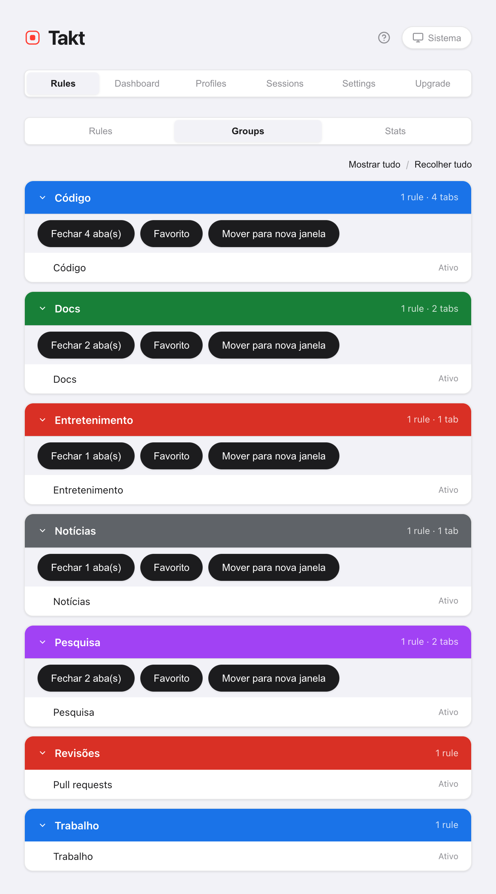
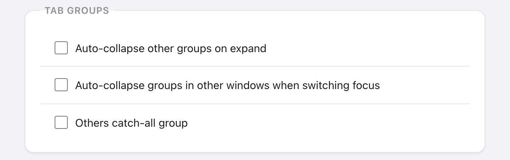

Resposta curta: o Takt reúne todas as ações em massa sobre abas num só popup e em três atalhos padrão. Alt+Shift+G agrupa, Alt+Shift+U desagrupa, Alt+Shift+C recolhe.
- Free: Agrupar, Desagrupar, Recolher, Expandir, Fechar duplicadas, Ordenar por domínio (janela atual), o painel Tabs.
- Premium: fechar, favoritar ou mover um grupo inteiro, ordenar todas as janelas, recolher as outras janelas, um grupo "Outros" para as sobras.
- Tudo roda no seu computador. Sem conta.
O que faz cada botão de arrumação?
O painel Início do popup tem um bloco de Ações rápidas. Agrupar, Desagrupar, Recolher, Expandir e Fechar duplicadas ficam cinza quando não teriam efeito, então o bloco também mostra o estado das suas abas.

| Botão | O que faz | Alcance | Plano |
|---|---|---|---|
| Agrupar abas | Coloca as abas em grupos pelas suas regras, por categoria ou com IA | Todas as janelas | Free |
| Desagrupar tudo | Remove todos os grupos e mantém todas as abas | Todas as janelas | Free |
| Recolher tudo | Recolhe cada grupo até o rótulo | Todas as janelas | Free |
| Expandir tudo | Abre todos os grupos | Janela atual | Free |
| Fechar duplicadas | Fecha URLs repetidas e mantém a primeira cópia | Janela atual | Free |
| Ordenar por domínio | Coloca lado a lado as abas do mesmo site | Janela atual (Free), todas as janelas (Premium) | Free / Premium |
Agrupar abas segue o modo de agrupamento escolhido logo acima. Nos modos Por categoria e Por IA, o plano gratuito cria até 5 grupos por execução. Saiba mais em agrupar com regras e agrupar por categoria ou com IA.
Como arrumar uma janela bagunçada em quatro cliques?
- Fechar duplicadas. As abas repetidas desta janela se fecham. A cópia mais à esquerda fica. Fazendo isso primeiro, você nunca agrupa as cópias.
- Agrupar abas. Cada aba que corresponde cai no seu grupo.
- Ordenar por domínio. Dentro de cada grupo, e entre as abas sem grupo, as abas do mesmo site ficam enfileiradas. Ordenar nunca move uma aba para dentro ou para fora de um grupo.
- Recolher tudo. Cada grupo se recolhe até o rótulo colorido.
Fechar duplicadas considera duas URLs iguais conforme a sua configuração de correspondência de URL. O padrão ignora o #fragmento, um www. no início, a barra final e a ordem dos parâmetros de consulta.
Quais são os atalhos de teclado?
| Atalho | Ação | Plano |
|---|---|---|
| Alt+Shift+G | Agrupar todas as abas | Free |
| Alt+Shift+U | Desagrupar todas as abas | Free |
| Alt+Shift+C | Recolher todos os grupos | Free |
| Alt+Shift+Space | Quick Switch: pesquisar e ir para qualquer aba | Premium |
| Nenhum por padrão | Expandir todos os grupos | Free |
O Chrome deixa uma extensão sugerir no máximo quatro atalhos, por isso Expandir tudo vem sem nenhum. Defina uma tecla em chrome://extensions/shortcuts. Lá você também pode mudar os outros quatro.
Como vejo todas as abas abertas numa só lista?
Abra o painel Tabs do popup. Ele lista as abas de todas as janelas sob o nome dos seus grupos, de A a Z, com as abas sem grupo por último. Digite para filtrar por título ou URL. Clique numa aba para ir até ela. Este painel é gratuito.
Posso fechar, favoritar ou mover um grupo inteiro?
Sim, com o Premium. Três ações tratam o grupo como uma unidade:
- Fechar. Fecha as abas do grupo. As abas fixadas continuam abertas. A visão Groups pede confirmação antes.
- Favorito. Salva o grupo numa pasta "Takt Bookmarks". As abas continuam abertas. Precisa da permissão opcional de Favoritos.
- Mover para nova janela. Mantém o nome, a cor e o estado recolhido do grupo.
Você as encontra em Opções → Rules → Groups, ou clicando com o botão direito na página e abrindo Ações de grupo. O menu do botão direito também pode mover o grupo para outra janela que você já tenha aberta.

Os grupos podem se recolher sozinhos?
De três formas, todas desligadas até você ligá-las:
- Por regra. Marque Auto-collapse group no editor de regras. Um novo grupo criado por essa regra já começa recolhido, a não ser que contenha a aba que você está vendo. Gratuito.
- Na mesma janela. Settings → Tab Groups → Auto-collapse other groups on expand. Abra um grupo e os outros daquela janela se recolhem. Gratuito.
- Entre janelas. Auto-collapse groups in other windows when switching focus. Troque de janela e, depois de 300 ms, os grupos de todas as outras janelas se recolhem. Premium.

O que acontece com as abas que nenhuma regra pega?
Elas ficam sem grupo. Com o Premium, ligue Others catch-all group e Agrupar abas junta todas as abas que sobraram num grupo cinza "Outros". Abas fixadas e páginas chrome:// ficam de fora. Rodar Agrupar abas de novo reaproveita o mesmo grupo Outros. Vale no modo Por regras.
O que esses botões não fazem
- Ordenar por domínio é pontual. As novas abas não ficam ordenadas. Ele também compara só as duas últimas partes do nome do host, então
example.co.uké ordenado comoco.uk. - Fechar duplicadas fica numa janela só. Uma cópia aberta em outra janela não é tocada.
- As ações de grupo ficam no menu da página. Clique com o botão direito na página, não na barra de abas.
- Agrupar abas precisa de um critério. No modo Por regras, as abas que nenhuma regra pega ficam soltas, a menos que o grupo Outros esteja ligado.
Dois cliques entre abas soltas e uma fileira arrumada de grupos.
Adicionar o Takt ao Chrome, grátisPerguntas frequentes
Quais são os atalhos de teclado padrão do Takt?
Alt+Shift+G agrupa, Alt+Shift+U desagrupa, Alt+Shift+C recolhe e Alt+Shift+Space abre o Quick Switch (Premium). Expandir tudo não tem tecla padrão. Defina uma em chrome://extensions/shortcuts.
Qual aba o Fechar duplicadas mantém?
A primeira cópia na ordem da barra de abas, da esquerda para a direita. As cópias seguintes na janela atual são fechadas. A sua configuração de correspondência de URL decide o que conta como a mesma URL; por padrão, o #fragmento é ignorado.
Os botões de arrumação são gratuitos?
Agrupar, Desagrupar, Recolher, Expandir, Fechar duplicadas, o painel Tabs e o recolhimento automático na mesma janela são gratuitos. Ordenar por domínio é gratuito para a janela atual. O Premium (US$ 3/mês ou US$ 30/ano) acrescenta a ordenação de todas as janelas, as ações de grupo, o recolhimento automático entre janelas e o grupo Outros.
Posso fechar um grupo de abas inteiro de uma vez?
Com o Premium, sim: pela visão Groups nas opções do Takt, ou por Ações de grupo no menu de clique com o botão direito da página. Fechar ignora as abas fixadas, e a visão Groups pede confirmação antes.